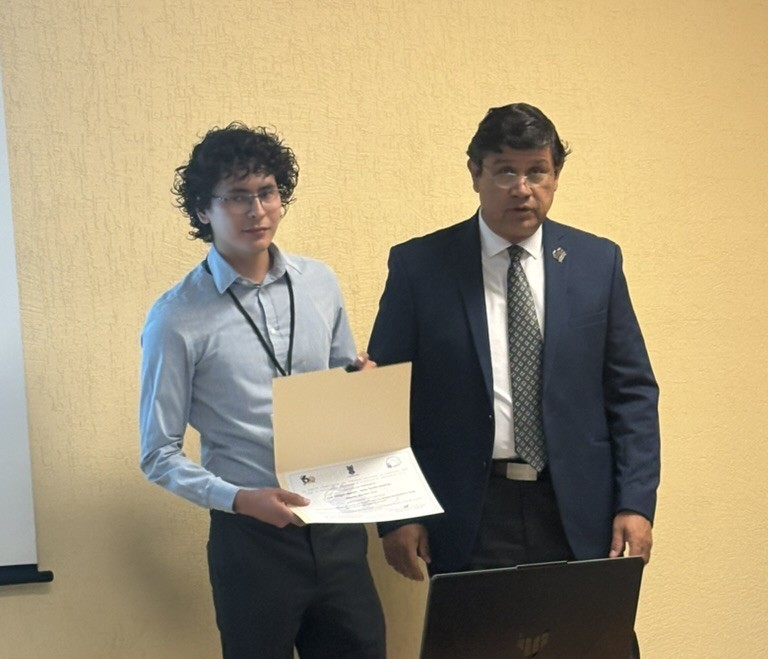
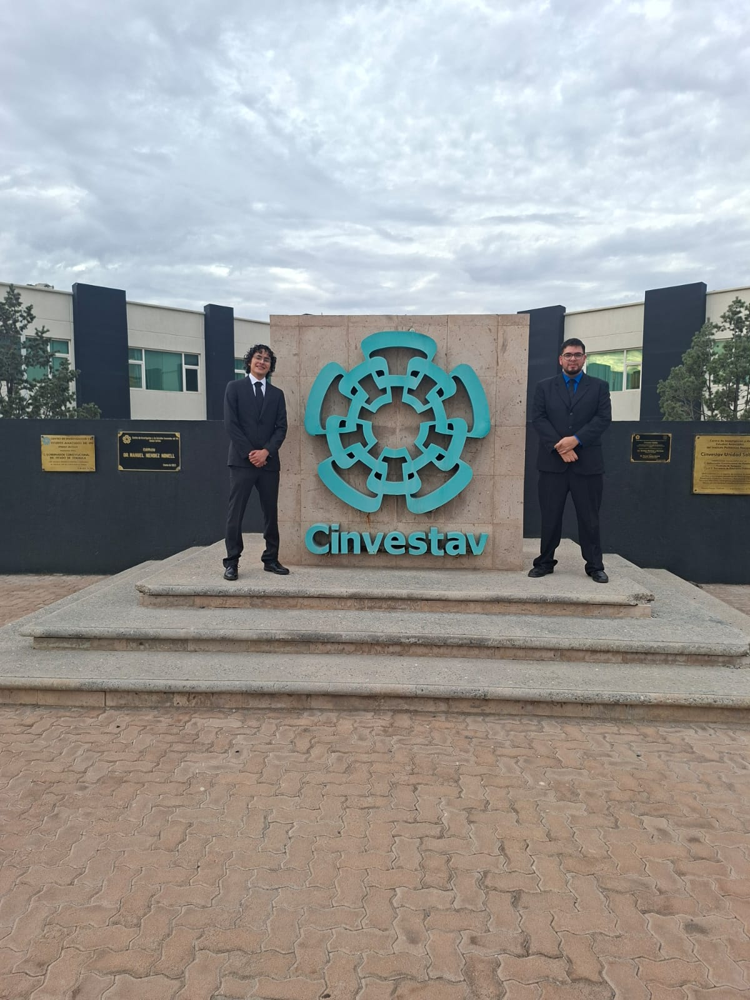
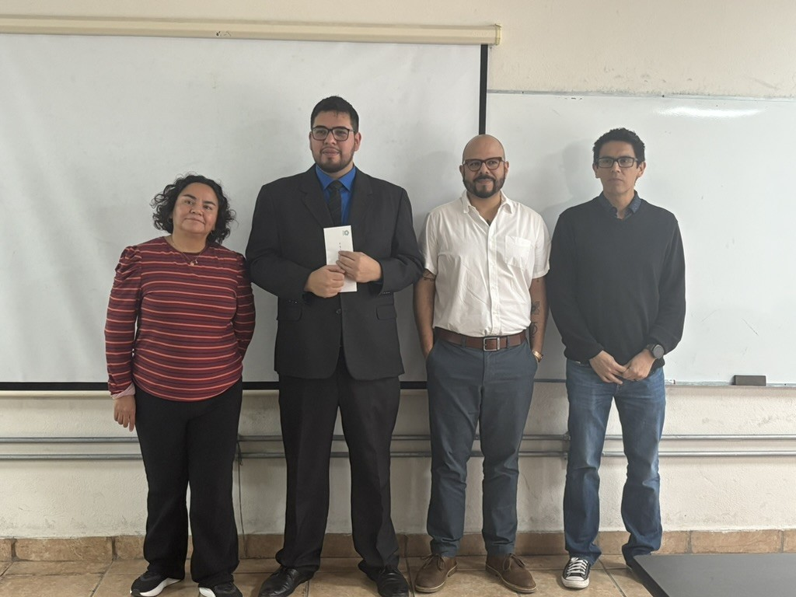
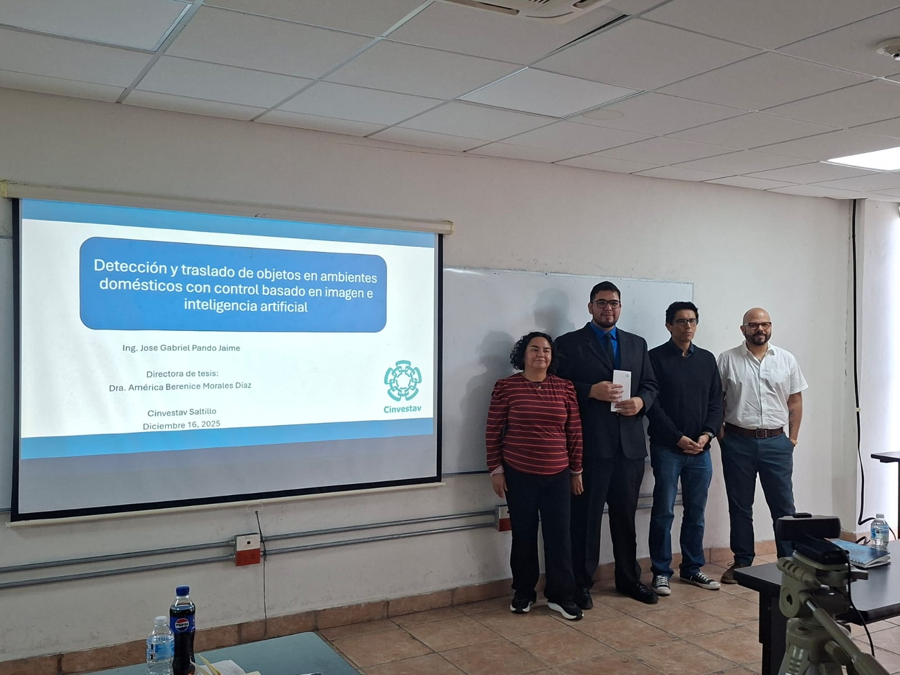
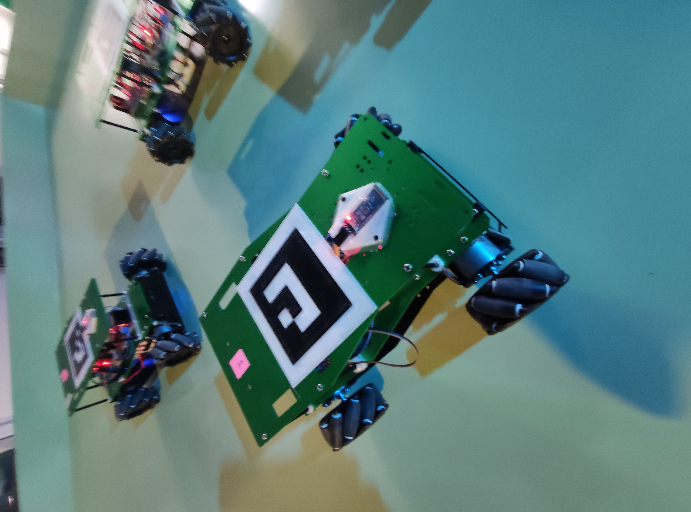
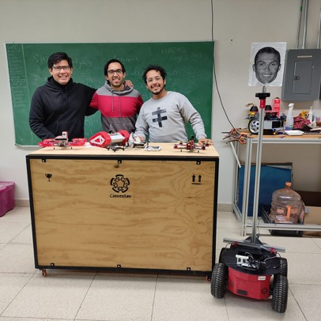

Robótica Móvil y Agricultura Inteligente
Investigación, innovación y desarrollo tecnológico en robots móviles, agricultura inteligente e interacción humano-robot.
Proyectos
Explora nuestras investigacionesNoticias
Eventos y actividadesIntegrantes
Conoce al equipo RMYADra. América
Responsable del laboratorioContacto
Escríbenos
Sobre Nosotros
El Laboratorio de Robótica Móvil y Agricultura Inteligente (RMYA) del CINVESTAV es un grupo de investigación dedicado al desarrollo de soluciones innovadoras en robótica móvil, agricultura inteligente e interacción humano-robot, nuestro trabajo se enfoca en el diseño de algoritmos avanzados para navegación autónoma, coordinación de robots, monitoreo ambiental y sistemas
Una de nuestras principales lineas de investigacion es el desarrollo de sistemas robóticos para la agricultura inteligente, que incluyen robots para monitoreo de cultivos, inspección de plantas y análisis de datos agrícolas, con el objetivo de mejorar la eficiencia y sostenibilidad de las prácticas agrícolas.
Nos Apasiona
Robots Móviles
Desarrollo de algoritmos para navegación autónoma, coordinación y cooperación robótica.
Vehículos Autónomos
Investigación en automóviles autónomos, seguimiento de trayectorias y movilidad inteligente.
Agricultura Inteligente
Sistemas robóticos para monitoreo, inspección y análisis de cultivos.
Experimentos y Demostraciones
Interacción Humano-Robot
Coordinación de Manipuladores Móviles
Investigadores en Formación
Estudiantes de maestría y doctorado que desarrollan investigación activa en el laboratorio.
Neftalí Jonatán González Yances
Doctorado
Sistema multi-agente robusto para mapeo de variables medioambientales en invernaderos.
Sonia María Dávila Soberón
Doctorado
Sistema de navegación en exteriores para detección de usuarios de tecnologías de apoyo a la movilidad.
Rodolfo de Jesús Villalobos Salazar
Doctorado
Indicadores de accesibilidad durante la interacción humano-robot.
Amaury David Castellanos Palomo
Maestría
Coordinación de manipuladores móviles usando acoplamientos dinámicos.
Graduaciones y Movilidad Académica
Nuestros estudiantes participan activamente en congresos, estancias académicas, colaboraciones internacionales y culminan exitosamente sus estudios de maestría y doctorado.

Ceremonia de Graduación

Presentación de Tesis

Reconocimiento Académico

Estancia de Investigación en Japón

Participación en Congreso Internacional

Deteccion y traslado de usuarios de tecnologías de apoyo a la movilidad
Participación Internacional en Japón
El Laboratorio de Robótica Móvil y Vehículos Autónomos participó en la IEEE International Conference on Advanced Robotics and its Social Impacts (ARSO 2025), celebrada en Osaka, Japón.
Durante el evento se presentó el trabajo "Approachability Aware Interaction: Towards Emotion Recognition on Autonomous Mobile Robots" , enfocado en mejorar la interacción humano-robot mediante reconocimiento automático de emociones.
La investigación permite que un robot móvil detecte expresiones faciales y determine si una persona está dispuesta a interactuar, logrando comportamientos más naturales, seguros y socialmente aceptables.
Osaka 2025
IEEE ARSO
Interacción Humano-Robot
IA y Navegación Autónoma
Nuestro Laboratorio



Trabajo a Futuro
Navegación autónoma en exteriores, monitoreo ambiental, interacción humano-robot, agricultura inteligente y sistemas cooperativos para aplicaciones reales.